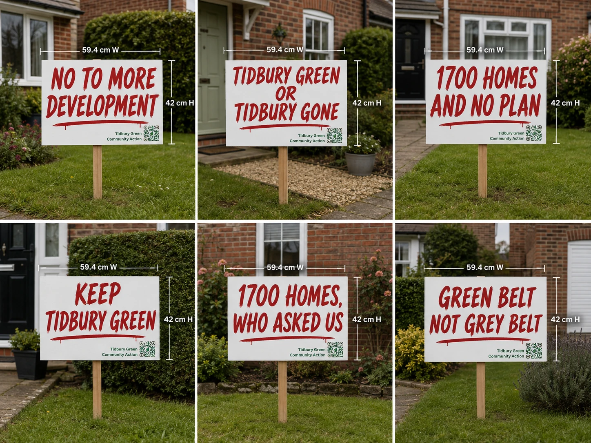

Stand with us.
This is a grassroots campaign, run entirely by volunteers. Together, our local knowledge can become one of the strongest tools we have to protect our village.
Put up a sign
Your £10 supports the campaign against large-scale Green Belt development. As a thank-you, you will receive one campaign lawn sign and stake, made to order, with a slogan selected at random from our current range.
Choose local delivery or collection at checkout. Donations fund materials and printing only.
Request a sign
Fund the fight
To defend our village at every level, from community awareness to formal planning challenge, we need additional funding.
We are committed to complete transparency, and every pound donated will go directly into the campaign.
Donate on GoFundMeStay connected
Our WhatsApp group is the best way to hear about important deadlines and news.